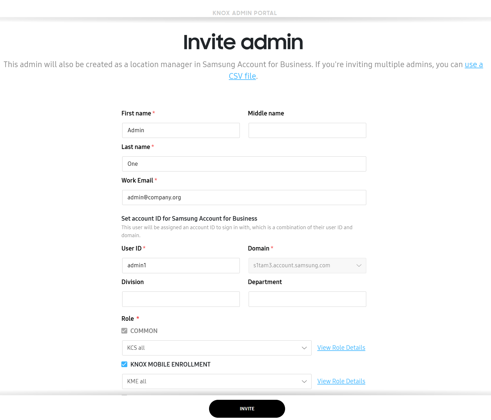
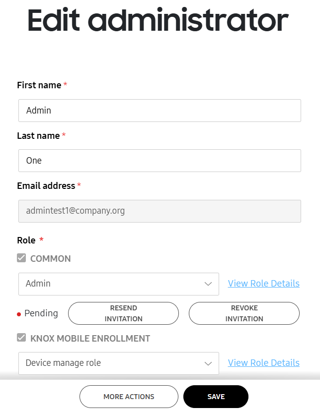
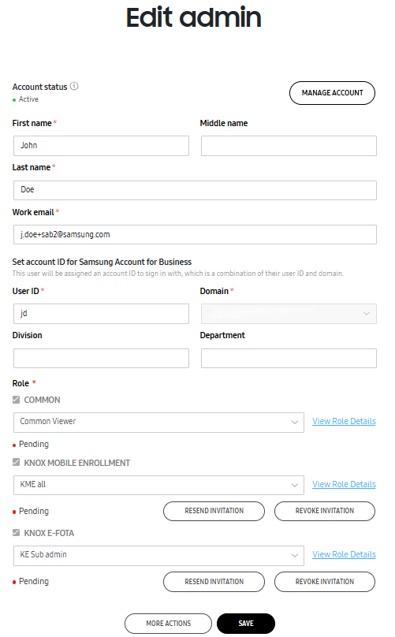

Manage admins
Last updated January 19th, 2026
To streamline the admin management process, the Knox Admin Portal offers a consolidated Administrators & Roles page that allows you to invite and manage admins for multiple services.
On the Knox Admin Portal navigation pane, click Administrators & Roles to view a list of admins for all supported Knox services in the ADMINS tab. The ROLES tab shows a list all available roles.
Whether you signed in to Knox Admin Portal using a Samsung account for Business or using a personal Samsung account, the admin management capabilities for both the account types are the same. However, some admin details shown in the Knox Admin Portal are specific to the account type used.
Access permissions
You’ll need the following permissions to access and manage admins:

| Task | Permission |
|---|---|
| Access the Administrators & Roles page | Common > Administrators and Roles> Invite and manage administrators or Manage roles |
| View and manage admins across services | Common > Administrators and Roles> Invite and manage administrators |
| View and manage roles across services | Common > Administrators and Roles > Manage roles |
| View and manage admins for a Knox cloud service | Administrators and Roles > Invite and manage administrators permission for that service |
| View and manage roles for a Knox cloud service | Administrators and Roles > Manage roles permission for that service |
Admins tab
The ADMINS tab displays a table listing all admins registered for Knox services. The admin list shows the following information:
| Column | Description |
|---|---|
| NAME | The name of the admin. The super admin, who created the enterprise’s tenant, is marked with a crown next to their name. Click an admin’s name to view or edit their details, including services they have access to and roles they have been assigned. |
| ACCOUNT ID | If using Samsung account for Business, the ID that’s used to sign in. |
| ACCOUNT STATUS | If using Samsung account for Business, the account status in the Samsung account for Business console, such as Pending, Active, Locked, Blocked, Pending deletion, Awaiting update, and Failed. The account status is synced with the Samsung account for Business console. |
| WORK EMAIL | The work email address of the admin. |
| COMMON | Any common roles assigned to the admin. |
Additionally, all currently supported Knox services are also shown as columns and display the role and status of admins assigned to that service. The COMMON column shows the role and status of admins who can manage features across all services.
Invite an admin
- An admin with either the Invite and manage administrators or Manage roles permission can grant another admin only the permissions that are less than or equal to their own permissions for the corresponding Knox service.
- In case of Knox Manage, only super admins can invite sub-admins to the Knox Manage console.
To add a new admin:
-
On the ADMINS tab, click INVITE ADMIN. The Invite admin page opens.

-
Enter the First Name, Last Name, and Email Address of the new admin.
- If you’re signed in with a Samsung account for Business, you can provide additional details, such as Middle name (optional), User ID, Domain, Division (optional), and Department (optional).
-
Choose appropriate roles and permissions to assign to the admin. To do so, select COMMON and at least one Knox cloud service and choose permissions from the drop-down.
- In case of Knox Manage, you can choose only the sub-admin role from the Knox Admin Portal. To assign other roles and manage the admin accounts, use the Knox Manage console instead. For more information, see Add an administrator.
-
Click INVITE. The admin is added in the Pending status, and switched to Active after account activation.
The invited admin receives an email invitation with their sign-in information. They must activate their account within seven days or the invite will expire.
If you use Samsung account for Business:
- When you add an admin in the Knox Admin Portal, the new admin account is also added and synced with Samsung account for Business.
- Admin details, such as First name, Middle name (if specified), Last name, Account ID, Work email, Division (if specified), and Department (if specified), are automatically synced between the two systems.
When you add an admin from the Samsung account for Business console, you must assign to them at least one Knox cloud service and role so that they can access the Knox Admin Portal.
What to do if an admin invite fails?
If you see a Failed to invite admin or Failed to edit admin notification, it may be due to one or more of the following reasons. Resolve the issue and try again:
-
User ID length is not between 1 and 45 characters.
-
The user ID is associated with a personal Samsung account. Use a different user ID.
-
Account ID or domain contains restricted words: Samsung, supervisor, Tizen.
-
Account ID contains unsupported characters. You can only use period (.), underscore (), hyphen (), or plus sign (+) in the account ID.
-
Account ID is not in English alphabet.
-
The work email already exists in Samsung account for Business, but not in the same service location. Contact the Samsung account for Business admin to add the user to your service location as a location manager.
-
The work email already exists in Samsung account for Business within the same service location. Assign the user a role or try assigning a different user ID.
-
The invited user is a workforce user. Contact the Samsung account for Business admin to change the use role to location manager.
-
Account ID is already in use as the invited sub-admin is already associated with another Knox account. Specify a different user ID or domain for the admin.
Invite admins in bulk
To bulk invite admins to a Knox cloud service, you must have the Invite and manage administrators or Manage roles permission for that service.
You can invite up to 10 admins with a CSV file:
-
On the ADMINS tab, click INVITE ADMIN. The Invite admin page opens.
-
Click Use a CSV file. The Bulk invite admin page opens.
-
Click Download CSV template to get the CSV template, and fill in admin details in the specified format.
-
Click BROWSE to select and upload the CSV file. The file is validated for errors.
-
Select the required roles and permissions for the admins and click INVITE.
The admins receive email invitations with sign-in information and must activate their account within seven days of receiving the invite.
Activate an account
When an admin invites you to Samsung Knox, you’ll receive an email invitation containing your account ID and a link to activate your account. You must use the email invite to activate the account within seven days. If you don’t click the activation link in the email invite within seven days, your invitation expires and you must ask your admin to resend the invitation email. If the account is not activated within 30 days of the invite, the account is automatically deleted.
Depending on the account type stated in your email invitation (a personal Samsung account or a Samsung account for Business), the activation workflow will vary slightly.
For personal Samsung account
When your admin adds you to a Knox account, you receive an email invite. Use the link in your email invitation to sign in to your account. If you don’t have a Samsung account, you’ll be guided to create one.
For Samsung account for Business
To activate your account created using Samsung account for Business:
-
Click Get started in the email invite you received. The Privacy Notice dialog displays.
-
Agree to the privacy notice and click Continue. The Review your information dialog displays.
-
Verify your information and click Next. The Set your password dialog displays.
-
Enter your password, and click Next. If two-step verification is set up on your account, the Two-step verification dialog displays.
-
Enter the phone number that you can use to receive verification codes and click Next, and then click Send code.
-
Enter the verification code you receive, and click Verify. The Account updated dialog displays.
-
Click Sign in. The Sign in to your Samsung account for Business page displays.
-
Enter the account ID and password and click Next. The Samsung Knox agreements page displays.
-
Review the agreements and click Agree.
You’re signed in to the Knox Admin Portal. When you first sign in or sign in after a release, the Get Started page opens, showing the steps you can take to set up the Knox Admin Portal.
Edit an admin
This feature is only available if your admin user has the Invite and manage administrators or Manage roles permission.
Once you’ve invited an admin, click on their name in the admin list to edit their details. You can edit admin details irrespective of the account status, including the Pending Deletion status.
For personal Samsung account
On the Edit administrator page, you can make the following changes and then click SAVE:
-
Modify the admin’s details, such as first and last names.

-
View and update roles for each service that an admin’s invited to.
-
Assign the sub-admin role for Knox Manage admins. To add super admins and edit other admin types, use the Knox Manage console instead. For more information, see Add an administrator.
-
Use the MORE ACTIONS menu to invite an admin or deactivate and delete an existing account.
For Samsung account for Business
If you’re signed in using Samsung account for Business credentials:
-
You can edit additional details in the Edit admin page, such as Middle name, Work email, User ID, Domain, Division, and Department.

-
If you’re a super admin, you are also shown the Manage account button, which opens the Samsung account for Business console for the admin being edited.
-
You can resend or revoke invitations for admins.
An email notification is sent to the admin when you save the changes made to their account. Any updates made to the admin information are synced between the Knox Admin Portal and the Samsung account for Business console.
Deactivate an admin
If you want to prevent an admin from managing certain Knox cloud services that your company uses, you can choose to deactivate their account. Only active admins can be deactivated.
To deactivate a Knox admin:
- In the Administrators & Roles page, click the name of the admin you want to deactivate. The Edit admin page opens.
- Click MORE ACTIONS > Deactivate account. The Deactivate account dialog opens showing the services managed by the admin.
- Select the Knox services you don’t want the admin to manage anymore, then click DEACTIVATE.
The admin is removed from the specified services. They won’t be able to access these Knox services, but can continue to manage other services assigned to them. There is no impact on their Samsung account.
Delete an admin
If an admin no longer needs to manage any Knox services for your company, you can delete them from your admin list. Make sure you have the Invite and manage administrators or Manage roles permission for the same Knox services as the admin you’re deleting, or the Delete account option is disabled.
When signed in with Samsung account for Business, consider the following while deleting admins in the Knox Admin Portal:
-
To completely remove an account, delete them from both the Knox Admin Portal and the Samsung account for Business console.
-
Super admins can be deleted only from the Samsung account for Business console. Deleted super admins are disabled and sub-admins are notified using email.
-
After an admin is deleted, the admin’s account is no longer shown in the admin list, but their Samsung account for Business remains active.
-
If a deleted admin also manages Knox Guard:
- They are removed from all services except Knox Guard, and are still shown as Active in the Knox Guard console. They can only access the Knox Guard console.
- To fully revoke their access, delete the admin from both the Knox Admin Portal and the Knox Guard console.
-
Admin accounts deleted in the Samsung account for Business console are shown in the Pending deletion status on both the Knox Admin Portal and the Samsung account for Business console.
To delete a Knox admin:
-
In the Administrators & Roles page, click the name of the admin you want to delete. The Edit admin page displays.
-
Click MORE ACTIONS > Delete account. The Delete account dialog opens.
-
If you signed up using Samsung account for Business credentials, select the services to remove them from:
- Knox Admin Portal and Knox Guard
- Knox Admin Portal only
-
(Optional) Enter a reason for the admin deletion.
-
Click DELETE.
The admin is then deleted from your company’s account and can no longer access your Knox services and data. A notification is sent to the admins to inform them of the change.
On this page
Is this page helpful?